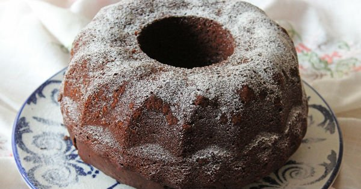

Kakaolu Kek
Kaç kişilik:10 dilim Hazırlama Süresi:10dk Pişirme Süresi:35dk
Kakaolu Kek Tarifi İçin Malzemeler
- 3 adet yumurta
- 1 su bardağı şeker
- 1 su bardağı sıvı yağ
- 1 su bardağı süt
- 1/2 çay bardağı maden suyu
- 1/2 çay bardağı kakao
- 1 paket vanilya
- 1 paket kabartma tozu
- 3 su bardağı un
Kakaolu Islak Kurabiye Tarifi Nasıl Yapılır
- 3 adet yumurta ve 1 su bardağı toz şekerini derin bir kapta bir mikser yardımıyla şeker eriyene kadar çırpın.
- Ardından 1 su bardağı sıvı yağ, 1 su bardağı süt ve yarım çay bardağı sodayı da üzerine ekleyip çırpmaya devam edin.
- Kek harcına 3 su bardağı unu ve yarım çay bardağı kakaoyu azar azar ilave edin. 1 paket kabartma tozu ve 1 paket vanilini
de ekledikten sonra spatula yardımıyla, pürüzsüz bir harç elde edene kadar karıştırmaya devam edin.
- Hazırladığınız kakaolu kek karışımını yağladığınız kek kalıbına dökün.
- Önceden ısıtılmış 180 derece fırında 30-35 dakika kadar pişirin. İçini çekmesi için beklettiğiniz keki, ılınınca kalıbından çıkartın.
- Üzerine pudra şekeri serperek servis edin.
